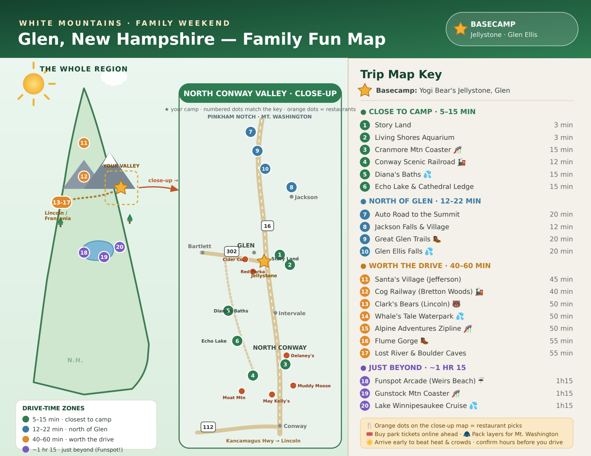

20 numbered stops within about an hour of basecamp at Yogi Bear's Jellystone Park, Glen Ellis — plus restaurant picks on the valley close-up.

Pinch or zoom to explore — the numbered dots match the Trip Map Key on the right. Orange dots on the close-up are restaurant picks.